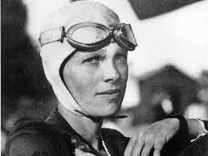
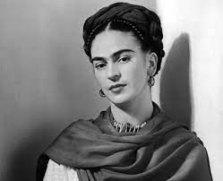

Maria Salomea Skłodowska-Curie, más conocida como Marie Curie, fue una científica de origen polaco (nacionalizada francesa) que revolucionó por completo el mundo de la ciencia con sus trabajos y descubrimientos. Pionera en el campo de la radiactividad (realizó el hallazgo de dos nuevos elementos: el Polonio y el Radio), fue la primera persona en recibir dos premios Nobel en distintas especialidades (física y química) y la primera mujer en ocupar el puesto de profesora en la Universidad de París. Marie Curie tuvo que luchar para poder convertirse en científica, ya que en su país (Polonia) las mujeres no podían acceder a estudios universitarios. Tuvo que compaginar los cuidados de sus dos hijas con su carrera científica.

Aviadora estadounidense, célebre por intentar el primer viaje aéreo alrededor del mundo sobre la línea ecuatorial, Amelia se convirtió en toda una heroína mundial idolatrada por las masas. Promovió un profundo debate sobre los derechos de la mujer y la igualdad de género en las primeras décadas del siglo pasado. Earhart fundó en 1929 una organización de mujeres aviadoras, The Ninety-Nines, era profesora de Aviación en la Universidad de Purdue, fue columnista de la revista Cosmopolitan y promotora de campañas en favor de los derechos femeninos. A pesar de no haber podido cumplir su sueño de dar la vuelta al mundo en avión (aunque se quedó muy cerca de conseguirlo) Amelia Earhart pasó a la historia por su coraje y valentía y por ser una pionera en la lucha por la igualdad de derechos.
Pintora mexicana que se ha convertido en uno de los grandes referentes del feminismo actual, Frida Kahlo no solo revolucionó el mundo del arte, sino también el de la política. Amiga de importantes artistas nacionales e internacionales, Frida es tan importante que fue la primera artista de este país en presentar una de sus obras en el Museo Louvre. Sus ideas políticas fueron revolucionarias en una época en la que las mujeres eran consideradas el sexo débil. Frida defendió la causa de las personas indígenas en México y como parte de su sentimiento nacional, recuperó en su obra sus símbolos y tradiciones.
